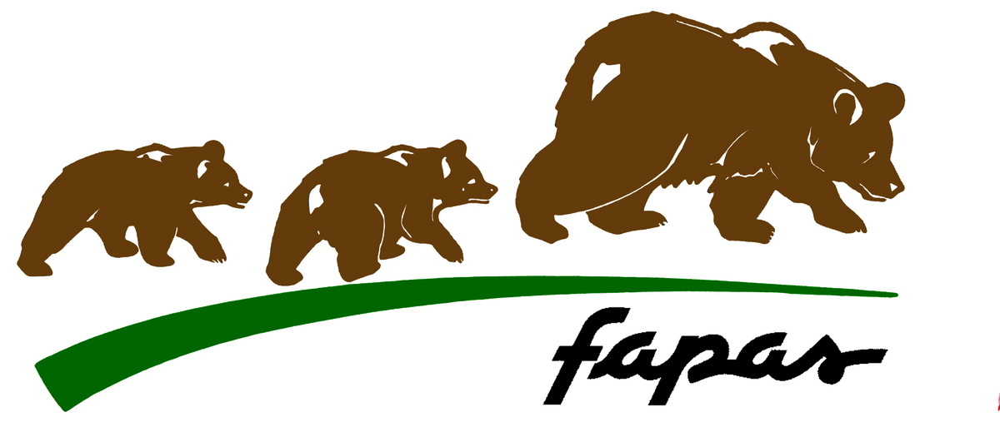
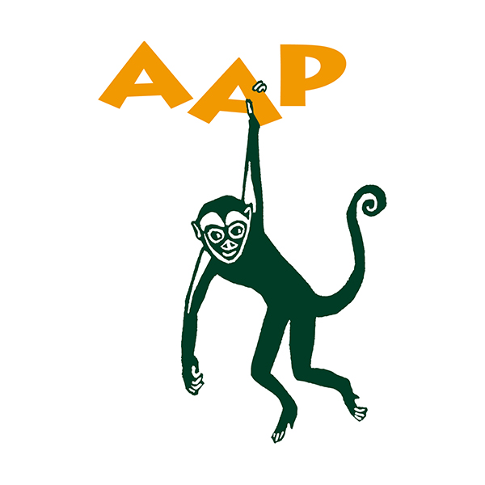

¡Salva a los animales!
Puedes aportar mucho donando a organizaciones destinadas a cuidar a los animales. Te dejamos ejemplos a continuacion:



Aves
Aves es una clase de animales vertebrados que regulan su temperatura, que caminan, saltan o se mantienen solo sobre las extremidades posteriores, mientras que las extremidades anteriores han evolucionado hasta convertirse en alas que, junto con otras características anatómicas únicas, les permiten, a la mayor parte de ellas, volar, si bien no todas vuelan. Tienen el cuerpo cubierto de plumas y, las aves sensu stricto, un pico cónico sin dientes. Para reproducirse ponen huevos que incuban hasta su eclosión.
Las aves se originaron a partir de dinosaurios carnívoros bípedos del Jurásico, hace entre ciento cincuenta y doscientos millones de años y, de hecho, son los únicos dinosaurios que sobrevivieron a la extinción masiva producida al final del Mesozoico. Por tanto, la sangre caliente, que es la característica más notable que comparten con los mamíferos, es un resultado de evolución convergente, pues no existió un ancestro común a ambos grupos que tuviera este rasgo. Su evolución dio lugar, tras una fuerte radiación, a las más de diez mil especies actuales (más 153 extintas en tiempos históricos). Las aves son los tetrápodos más diversos; sin embargo, tienen una gran homogeneidad morfológica en comparación con los mamíferos. Las relaciones de parentesco de las familias de aves no siempre pueden definirse por morfología, pero con el análisis de ADN han empezado a esclarecerse.
-Si bien no todas las especies de aves pueden volar (los pingüinos nadan, por ejemplo, y los avestruces corren), es uno de los rasgos distintivos de esta clase de animales, ya que la capacidad de desplazarse de un ecosistema a otro e incluso de proliferar en territorios aislados sin mayor competencia animal, permitió la enorme diversificación de las especies aviares.
-La dieta de las aves puede ser sumamente variada, oscilando entre néctar, frutas y vegetales, hojas y semillas, insectos, hongos, carroña y animales pequeños: peces, roedores, reptiles e incluso otras aves o sus huevos.
-Muchas aves prefieren una existencia solitaria o de núcleos familiares pequeños, sobre todo las dedicadas a la depredación. Mientras que la mayoría de las aves pequeñas se organiza en bandadas que pueden alcanzar proporciones importantes. Dada su alta capacidad de pensamiento inteligente, las aves son capaces de modos de socialización eficientes, en cuanto a comida y seguridad se refiere, y pueden incluso embarcarse en relaciones simbióticas o de comensalismo con miembros de otras especies, como lo hacen las garzas que se alimentan de los parásitos en el pelaje de mamíferos de gran tamaño.
-Las aves son ovíparas, de modo que una vez fecundada durante el coito, la hembra pone huevos provistos de un caparazón calcáreo, que luego son empollados hasta el instante de su eclosión. Lo interesante del coito de las aves son sus complejos rituales de apareamiento, en los que el macho usualmente atrae a la hembra haciendo gala de los colores de su plumaje, su canto e incluso construyendo el mejor nido posible con ramas y material que recoge de los alrededores.
-Muchas de las especies de aves migran, aprovechando la diferencia climática entre ambos hemisferios para optimizar sus fuentes de alimento o para llevar a cabo la temporada de cría. Algunas de esas migraciones son anuales, para lo cual los animales se preparan maximizando sus reservas de grasa y agua.
Ejemplo de ave: